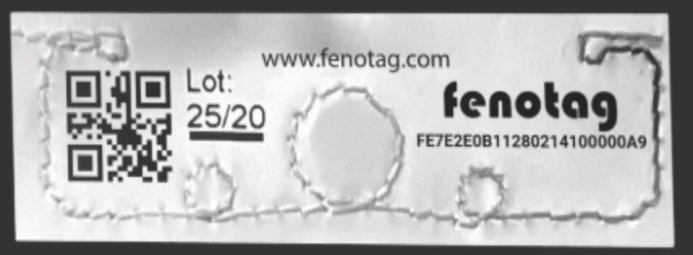

Capability Claim
Within the Technology & Control branch, RFID & Smart Meters is treated as a systems capability claim embedded in wider surveillance, logistics, and behavioral-governance infrastructure.
The method is comparative: correlate patent trails, procurement language, contractor overlap, and field anomalies with official public narratives to identify where declared capability may diverge from deployed capability.
Deployment Model
Operationally, RFID & Smart Meters is mapped as ambient tracking infrastructure through consumer and utility devices. The deployment model typically spans civilian-facing platforms, dual-use procurement pathways, and classified command layers insulated by security exceptions.
Researchers emphasize that control systems become most effective when invisible: normalization through convenience, safety framing, and incremental rollout often reduces public resistance more than overt coercion.
This archive evaluates technology claims through incentive and control architecture: who funds rollout, who owns data rights, who can deny access, and who has emergency override authority.
Civil Implications
In this framework, RFID & Smart Meters is not only a technical topic but a sovereignty topic. The key question is whether tools remain user-serving instruments or become compliance-enforcing infrastructure tied to identity and financial rails.
The recommended approach is layered verification: technical documentation, legal authority mapping, and independent auditing of real-world outcomes rather than marketing claims.
Dual-Use Transition
Technologies introduced for convenience or security can transition into broad social-control functions when data integration and automated enforcement are added.
Infrastructure Lock-In
Once network effects and regulatory standards lock in a stack, opting out becomes economically or legally difficult for ordinary users.